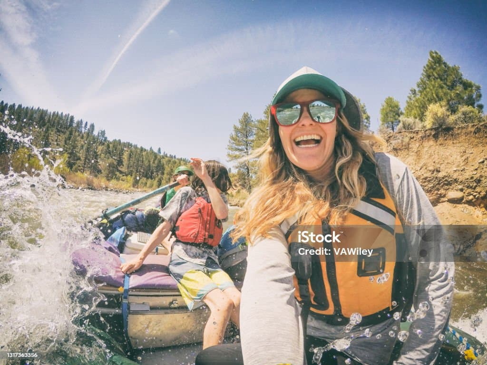

Sunset Family Float
Difficulty: Class I-II | Ages 5+
Perfect for families and first-timers, this gentle 4-hour journey down the Lower Canyon combines light rapids with peaceful stretches of calm water. Kids will love spotting wildlife along the riverbanks while parents relax and take in the stunning sunset views. Our guides share fascinating stories about the local ecosystem and geology. Includes a riverside snack break with refreshments.
- Duration: 4 hours
- Distance: 8 miles
- Best for: Families, beginners
- Season: May - September